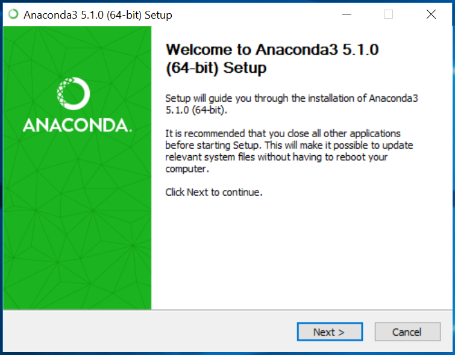
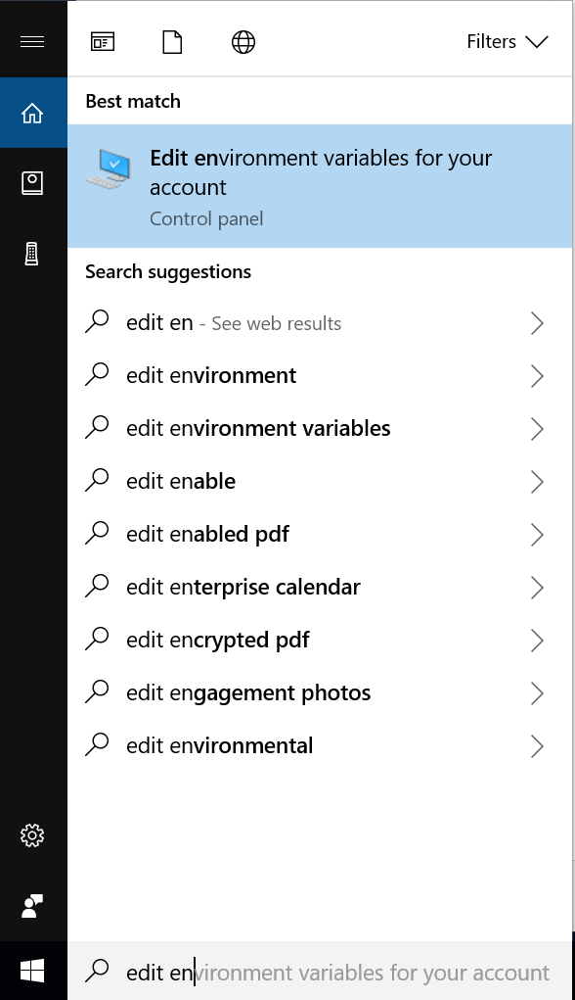

Installing ML-Agents for Windows
ML-Agents supports Windows 10. While it might be possible to run ML-Agents using other versions of Windows, it has not been tested on other versions. Furthermore, ML-Agents has not been tested on a Windows VM such as Bootcamp or Parallels.
To use ML-Agents, you install Python and the required Python packages as outlined below. This guide also covers how set up GPU-based training (for advanced users). GPU-based training is not required for the v0.3 release of ML-Agents. However, training on a GPU might be required by future versions and features.
Step 1: Install Python via Anaconda
Download and install Anaconda for Windows. By using Anaconda, you can manage separate environments for different distributions of Python. Python 3 is required as we no longer support Python 2. In this guide, we are using Python version 3.5 (Anaconda comes with Python 3.6, we will create an environment with python 3.5) and Anaconda version 5.1 (64-bit or 32-bit direct links).

We recommend the default advanced installation options. However, select the options appropriate for your specific situation.

After installation, you must open Anaconda Navigator to finish the setup. From the Windows search bar, type anaconda navigator. You can close Anaconda Navigator after it opens. If environment variables were not created, or if you see the error "conda is not recognized as internal or external command", in System Variables, "Path" add the following new paths:
C:\ProgramData\Anaconda3\Scripts
C:\ProgramData\Anaconda3\Scripts\conda.exe
C:\ProgramData\Anaconda3
C:\ProgramData\Anaconda3\python.exe
Step 2: Setup and Activate a New Conda Environment
You will create a new Conda environment to be used with ML-Agents. This means that all the packages that you install are localized to just this environment. It will not affect any other installation of Python or other environments. Whenever you want to run ML-Agents, you will need activate this Conda environment.
To create a new Conda environment, open a new Anaconda Prompt (Anaconda Prompt in the search bar) and type in the following command:
conda create -n ml-agents python=3.5
You may be asked to install new packages. Type y and press enter (make sure you are connected to the internet). You must install these required packages. The new Conda environment is called ml-agents and uses Python version 3.6.

To use this environment, you must activate it. (To use this environment In the future, you can run the same command). In the same Anaconda Prompt, type in the following command:
conda activate ml-agents
You should see (ml-agents) prepended on the last line.
Next, install tensorflow. Install this package using pip - which is a package management system used to install Python packages. Latest versions of Tensorflow won't work, so you will need to make sure that you install version 1.4.0. In the same Anaconda Prompt, type in the following command (make sure you are connected to the internet):
pip install tensorflow==1.4.0
Step 3: Install Required Python Packages
ML-Agents depends on a number of Python packages. Use pip to install these Python dependencies.
If you haven't already, clone the ML-Agents Github repository to your local computer. You can do this using Git (download here) and running the following commands in an Anaconda Prompt (if you open a new prompt, be sure to activate the ml-agents Conda environment by typing activate ml-agents):
git clone git@github.com:Unity-Technologies/ml-agents.git
If you don't want to use Git, you can always directly download all the files here.
In our example, the files are located in C:\Downloads. After you have either cloned or downloaded the files, from the Anaconda Prompt, change to the python directory inside the ML-agents directory:
cd C:\Downloads\ml-agents\python
Make sure you are connected to the internet and then type in the Anaconda Prompt:
pip install .
This will complete the installation of all the required Python packages to run ML-Agents.
(Optional) Step 4: GPU Training using ML-Agents
Not required to use v0.3 for ML-Agents. This is a guide for advanced users who want to train using GPUs. Additionally, you will need to check if your GPU is CUDA compatible. Please check Nvidia's page here.
As of ML-Agents v0.3, only CUDA 8 and cuDNN 6 is supported.
Install Nvidia CUDA toolkit
Download and install the CUDA toolkit from Nvidia's archive. The toolkit includes GPU-accelerated libraries, debugging and optimization tools, a C/C++ (Step Visual Studio 2015) compiler and a runtime library and is needed to run ML-Agents. In this guide, we are using version 8.0.61 (direct link).
Before installing, please make sure you close any running instances of Unity or Visual Studio.
Run the installer and select the Express option. Note the directory where you installed the CUDA toolkit. In this guide, we installed in the directory C:\Program Files\NVIDIA GPU Computing Toolkit\CUDA\v8.0
Install Nvidia cuDNN library
Download and install the cuDNN library from Nvidia. cuDNN is is a GPU-accelerated library of primitives for deep neural networks. Before you can download, you will need to sign up for free to the Nvidia Developer Program.
Once you've signed up, go back to the cuDNN downloads page. You may or may not be asked to fill out a short survey. When you get to the list cuDNN releases, make sure you are downloading the right version for the CUDA toolkit you installed in Step 1. In this guide, we are using version 6.0 for CUDA toolkit version 8.0 (direct link).
After you have downloaded the cuDNN files, you will need to extract the files into the CUDA toolkit directory. In the cuDNN zip file, there are three folders called bin, include, and lib.
Copy these three folders into the CUDA toolkit directory. The CUDA toolkit directory is located at C:\Program Files\NVIDIA GPU Computing Toolkit\CUDA\v8.0
Set Environment Variables
You will need to add one environment variable and two path variables.
To set the environment variable, type environment variables in the search bar (this can be reached by hitting the Windows key or the bottom left Windows button). You should see an option called Edit the system environment variables.

From here, click the Environment Variables button. Click New to add a new system variable (make sure you do this under _System variables and not User variables_.
For Variable Name, enter CUDA_HOME. For the variable value, put the directory location for the CUDA toolkit. In this guide, the directory location is C:\Program Files\NVIDIA GPU Computing Toolkit\CUDA\v8.0. Press OK once.
To set the two path variables, inside the same Environment Variables window and under the second box called System Variables, find a variable called PATH and click Edit. You will add two directories to the list. For this guide, the two entries would look like:
C:\Program Files\NVIDIA GPU Computing Toolkit\CUDA\v8.0\lib\x64
C:\Program Files\NVIDIA GPU Computing Toolkit\CUDA\v8.0\extras\CUPTI\libx64
Make sure to replace the relevant directory location with the one you have installed. Please note that case sensitivity matters.
Install TensorFlow GPU
Next, install tensorflow-gpu using pip. In an Anaconda Prompt with the Conda environment ml-agents activated, type in the following command (make sure you are connected to the internet):
pip install tensorflow-gpu==1.4.0
Lastly, you should test to see if everything installed properly and that TensorFlow can identify your GPU. In the same Anaconda Prompt, type in the following command:
import tensorflow as tf
sess = tf.Session(config=tf.ConfigProto(log_device_placement=True))
You should see something similar to:
Found device 0 with properties ...
Step Visual Studio 2015: CUDA 8.0 is not compatible with Visual Studio 2017, so you will need an older version. Uninstall Visual Studio 2017 that comes with Unity, download Visual Studio Enterprise 2015 and install it with the Windows SDK. If you don't want/ can't install Visual Studio Enterprise 2015, you will need: Visual C++ Redistributable for Visual Studio 2015, Visual Studio Community 2015 + Windows SDK.
Acknowledgements
We would like to thank Jason Weimann and Nitish S. Mutha for writing the original articles which were used to create this guide.